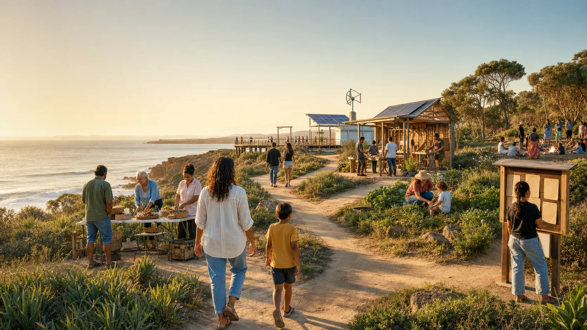

Learning circle
Best when people need shared language first. Run plain-English sessions about funds, insurance, data, and Country-led consent.

Options, not orders
A community does not need to jump from a good idea to a complicated institution. It can choose the smallest honest next step.
Starter paths
Best when people need shared language first. Run plain-English sessions about funds, insurance, data, and Country-led consent.
Best for small local activity: events, workshops, newsletters, repair days, and basic grants. Keep the risk low and the records tidy.
Best when members are also the users or owners. One member, one vote is the simple heart of the model.
A not-for-profit company structure often used for larger public-purpose work. It has directors, members, reporting duties, and no normal dividends.
Best when Native Title rights, cultural authority, or Country data are central. The correct Traditional Owner authority must lead.
Best only after serious advice. A real risk pool needs authorised managers, claims rules, reserves, complaints handling, and clean reporting.
Before building a fund, build a public glossary, risk checklist, data consent form, meeting rhythm, and source library. That is not boring admin. It is the seed tray.
Meeting questions
Decision lens
How much say do members, residents, and Traditional Owners have?
Does the structure hold up when money, risk, conflict, and regulators arrive?
Does it protect capital, land, culture, and knowledge for future generations?
Can a teenager, grandparent, organiser, or busy parent understand what to do next?